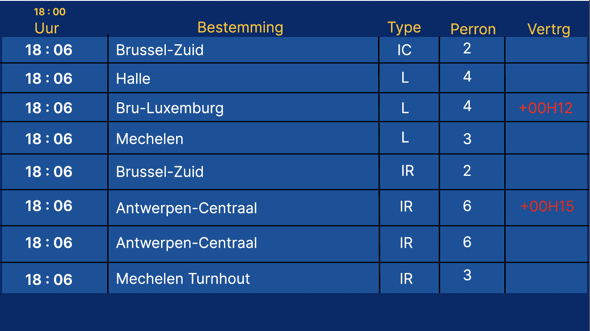
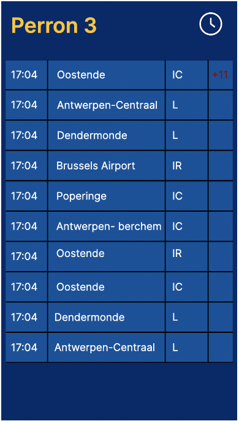
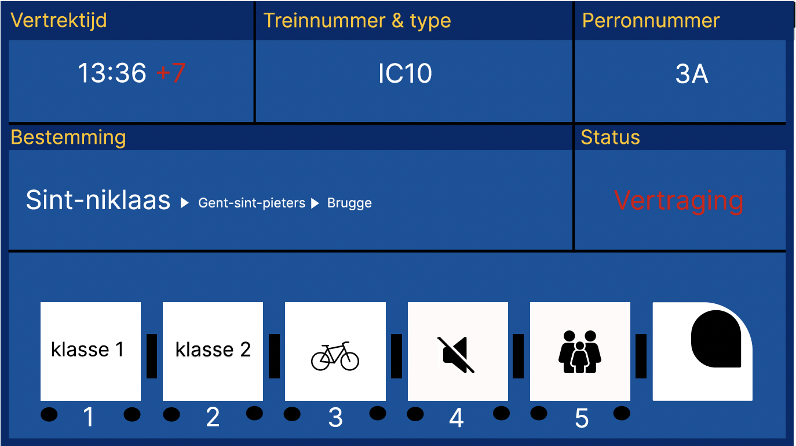

In week 2 heb ik mijn papieren schetsen vertaald naar digitale schermen in Figma. Ik heb de structuur van mijn overzichtsscherm, perronscherm en wagonscherm overgenomen, maar strakker en beter uitgelijnd gemaakt.
Voor het overzichtsscherm werkte ik met duidelijke kolommen voor uur, bestemming, type trein, perronnummer en vertraging. Ik gebruikte al een eerste versie van de blauwe achtergrond en gele titels, gebaseerd op de stijl van bestaande treinschermen.
Bij het perronscherm legde ik de focus op één perron. De reiziger ziet hier snel welke trein als volgende vertrekt, in welke richting en met welk type trein.
Voor het wagonscherm tekende ik de trein als een reeks wagons met icoontjes, zoals klasse 1, klasse 2, fiets, stiltezone en familiewagon. Elke wagon kreeg een nummer zodat reizigers weten waar ze best instappen.
Deze week draaide vooral om het overzetten van mijn schetsen naar een duidelijke digitale versie, met een eerste gevoel voor layout en hiërarchie.


